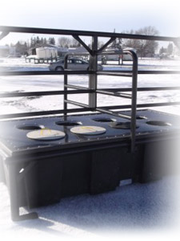
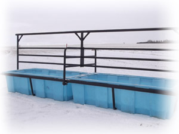

| • No Water to Freeze - No Water to Heat • For Dug out applications • Available as a Hybrid (solar & wind) system Water is pumped by a mechanical timed switch on cow demand, utilizing generated power. Designed to work on a wet well. One water line draws from the dug out and a return line drains back any water not used. Standard units come with 2 access ports and 1 switch, units can be easily upgraded. Swing out door provides easy access for maintenance. Designed for portability. System can be used year round. |
 |

For a complete list of products visit Promold
Marketing.
Nifty Livestock Equipment Ltd.
1999-2005
About Nifty / Feed Equipment / Livestock ID / Handling Equipment / Dealers Page / Contact Us